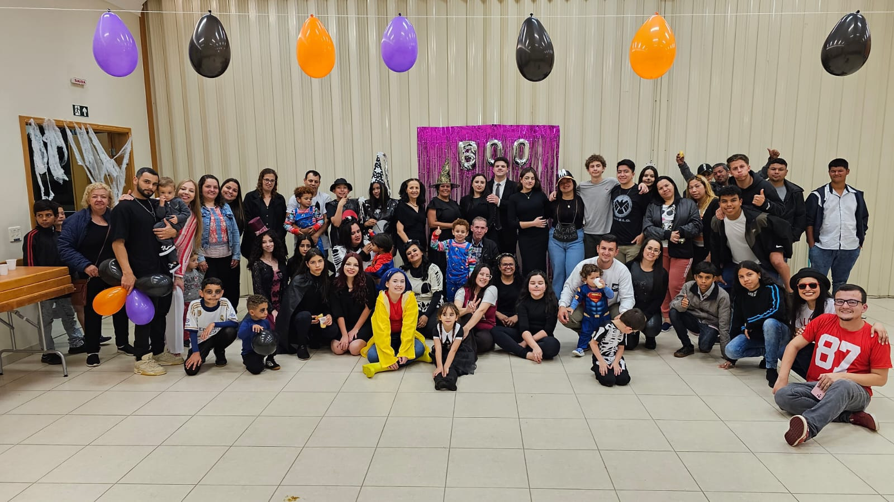
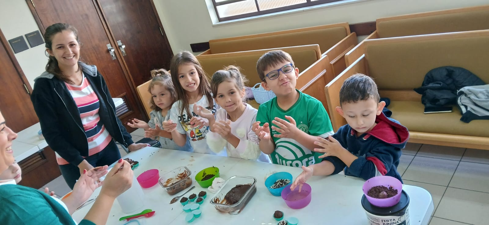
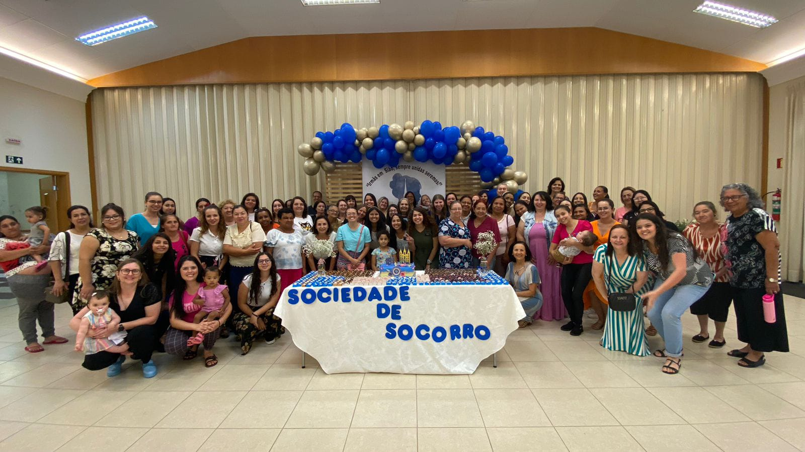

Bailes temáticos
Os jovens tem uma oportunidade de se movimentar e ao mesmo tempo fazerem novas amizades, bailes são organizados com diversos tipos diferentes de músicas, mas sem qualquer tipo de linguagem ou danças vulgares. São abertos a todos, sem qualquer custo para participar.
Recreação e apredizado
Para as crianças são realizadas brincadeiras, atividades de artezanato, cantam músicas, entre outras atividades. Muitas delas incluindo a participação dos pais, para fortalecer laços e trazer mais alegria para família.


Confraternizações
Com os adultos, são realizadas confraternizações com boa conversa, mensagens espirituais, música, mas acima de tudo, um sentimento maravilhoso de amizade e fraternidade entre todos que participam!